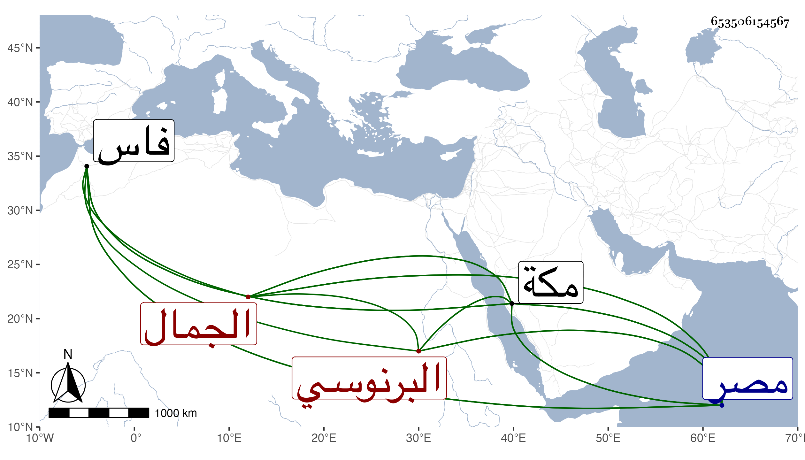

0902Sakhawi.DawLamic.ITO20230111-ara1.EIS1600.653506154567
Biography ID: 653506154567
152
عبد الله بن فارس بن أحمد الجمال الطاغي البرنوسي نسبة لقبيلة يقال لها البرانسة التازي بالزاي المنقوطة والمثناة الفوقانية وتازة من أعمال فاس ممن قدم مصر واشتغل وأخذ عن البدر بن الغرز وغيره بل أكثر عن النور بن التنسي في الفقه وغيره ووصفه البقاعي بالفاضل المفنن وأنه قرأ عليه في المناسبات في سنة ست وسبعين انتهى . وتميز وتحول لمكة فأقام بها يسيرا وتوجه مع أجود بن زامل عظيم بني جبر فاستقر به قاضيا بتلك النواحي وأقام عندهم نحو خمس عشرة سنة كان ربما قدم في غضونها معه للحج فلما كان في موسم سنة ثلاث وتسعين قدم معه وتخلف عنه فأدركته منيته بمكة بعد انفصال الحج بيسير في المحرم سنة أربع وتسعين وترك ولدا ، وكان فاضلا خيرا بل قيل أنه شرح المختصر ، وأبوه فارس ممن كان يذكر بخير وصلاح كبير بل جود القرا آت ومات بمصر سنة تسع وستين رحمهما الله .
